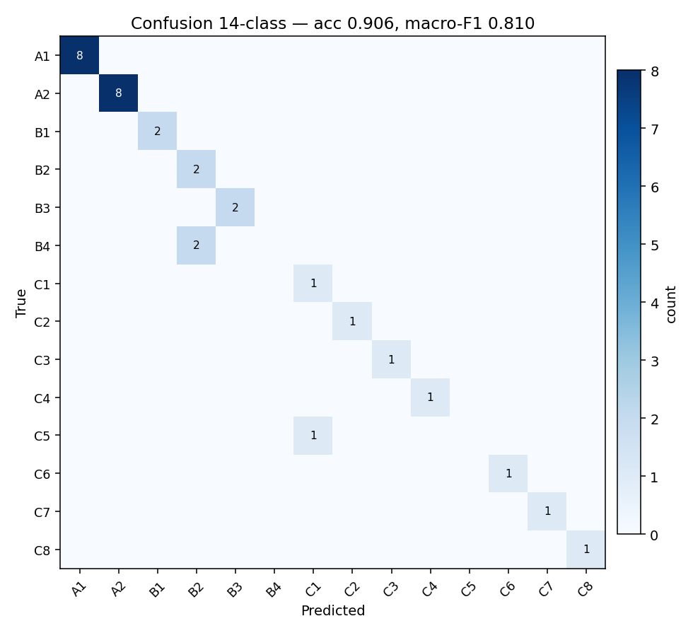
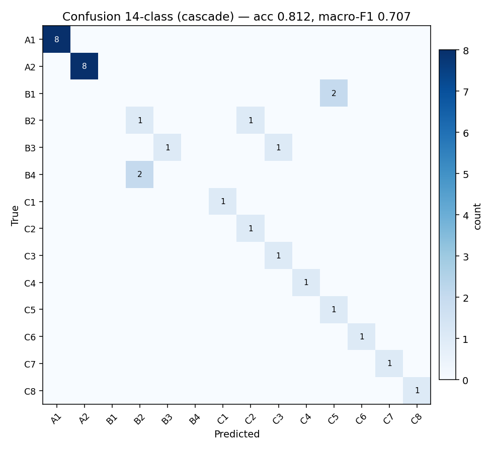
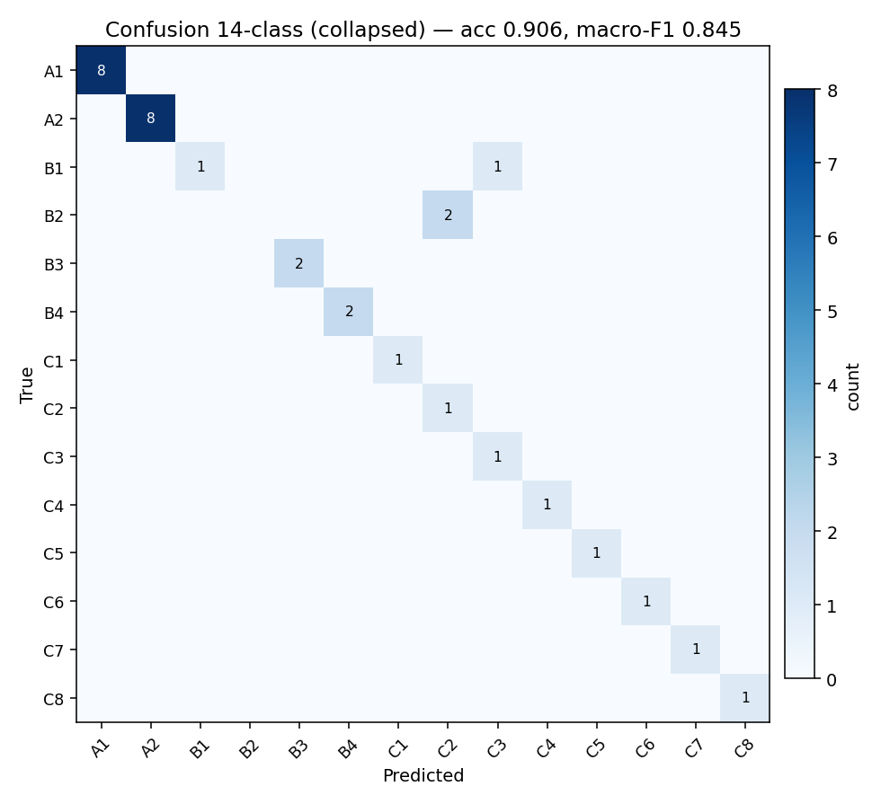
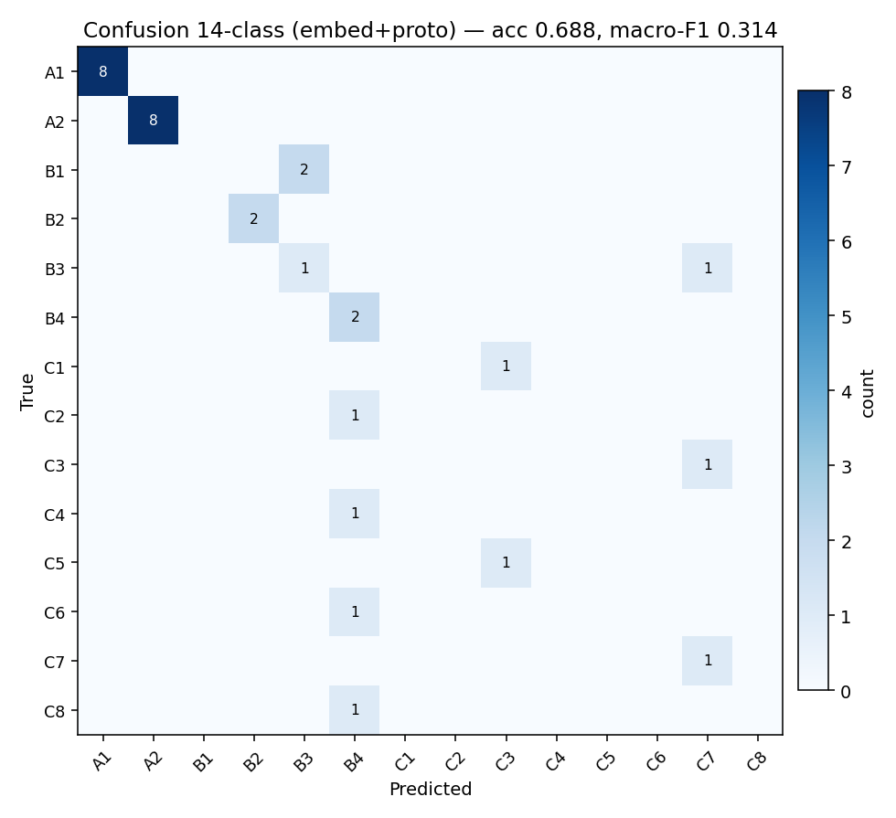
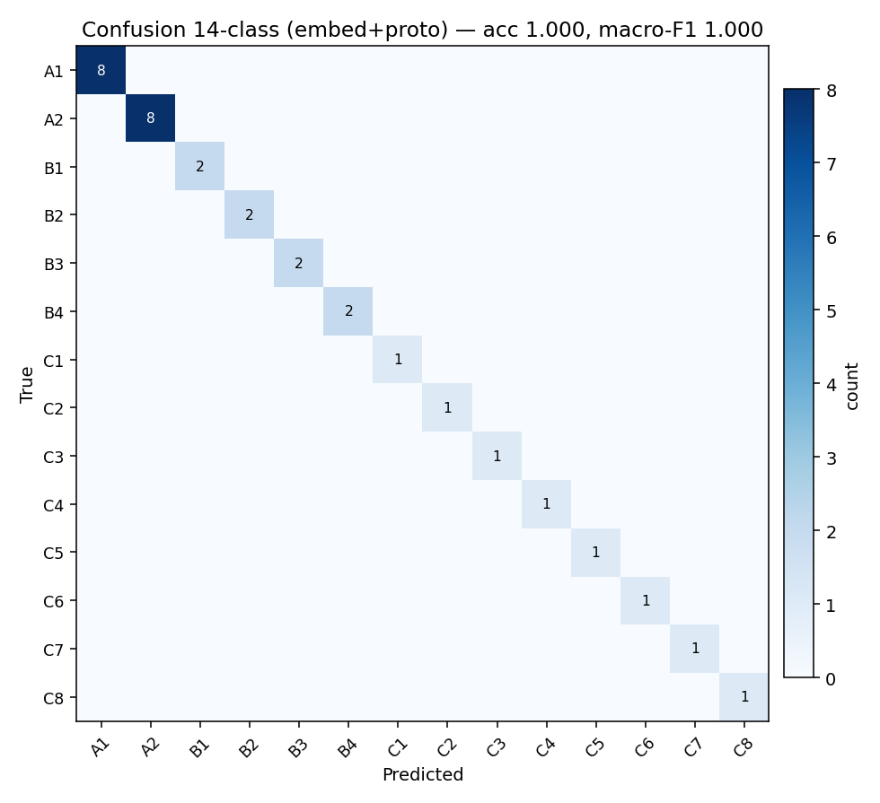
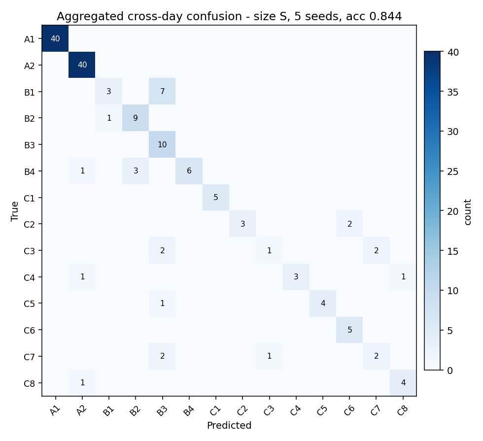
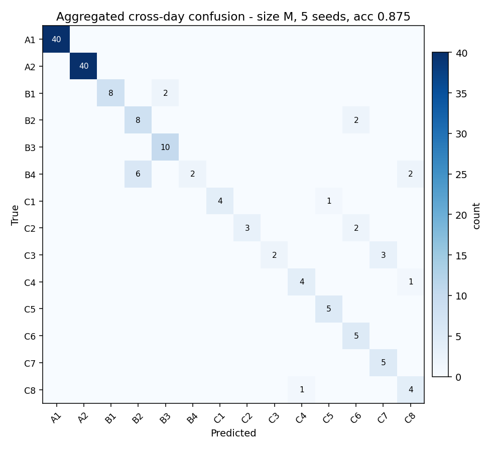
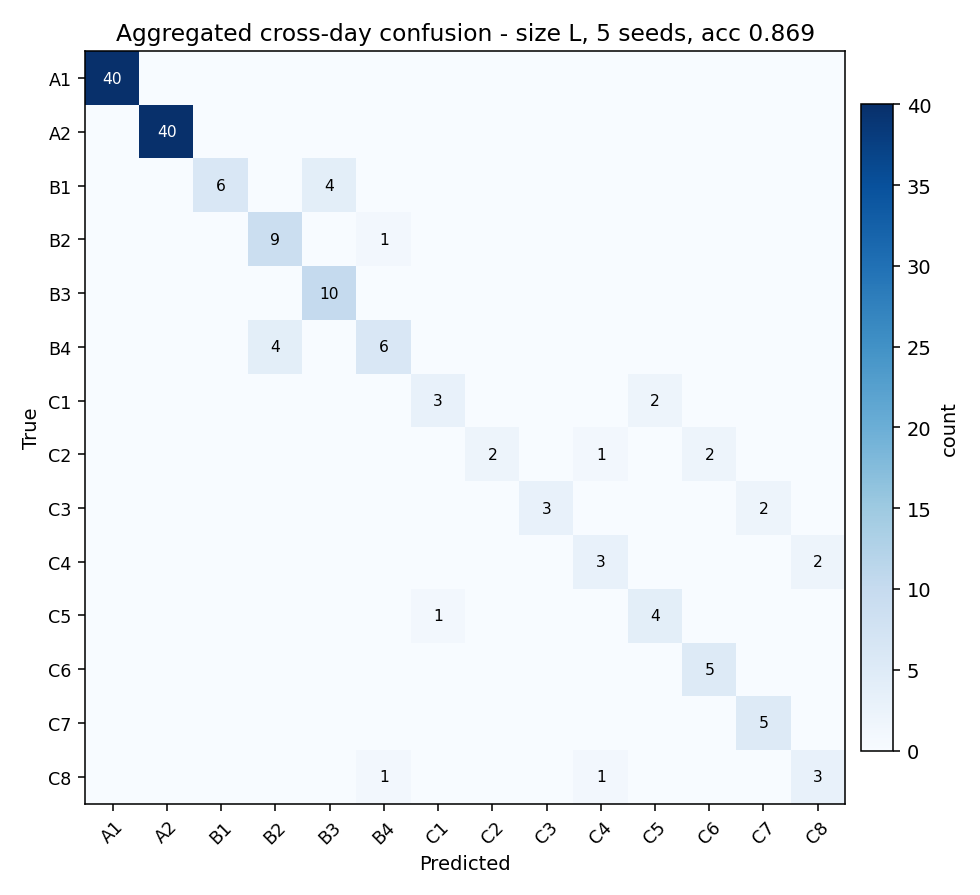
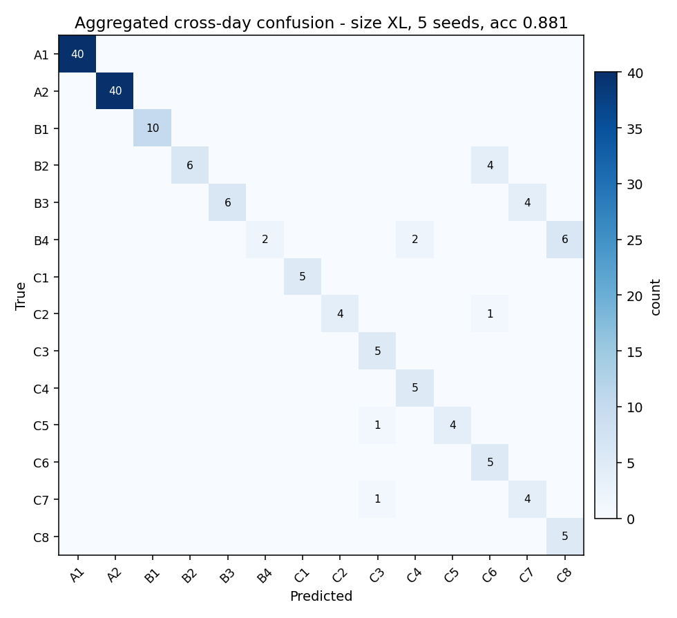

1. 背景 — なぜ head 設計を比較したか
v1 学習結果 §11 で 14cls (Linear 64→14) softmax 単ヘッド + noise_diff + feature_aug の組合せで cross-day 1.000 を達成。 ただしその裏側で、別途実施した サブ状態分離可能性解析 では:
- 等価クラス内サブ状態 (例: A1 内 8 サブ状態) はすべて SNR 16-90 で分離可能
- これは「閉扉が完全遮音」という理想化が崩れている (実扉は -20〜-30 dB 減衰程度) ためで、 真の情報量は log₂14 = 3.81 bit ではなく log₂32 = 5 bit に近い
- 14cls はこの "観測可能な情報" を 14 クラスに畳み込んで 捨てている可能性
そこで本実験では「14cls 以外の head 設計で同じ backbone を使ったら、どれが cross-day で勝つか / サブ状態識別を引き出せるか」を 4 案で比較する。
2. 結果サマリ
| head 設計 | head 出力 | train test (n=144) | noise_v1 (n=32) cross-day |
passive_v1 (n=32) 励振無 |
params |
|---|---|---|---|---|---|
| baseline: 14cls softmax (v1.3) | 14-way softmax | 1.000 | 1.000 | 0.250 | 13,790 |
| 案 1: 5-bit binary heads | 5 × sigmoid | 0.993 | 0.906 | 0.250 | ~13.5k |
| 案 2: 階層 cascade | 3-way L1 + 3 L2 heads | 1.000 | 0.812 | 0.250 | ~14.5k |
| 案 3: Hamming soft-label 32cls | 32-way softmax + Hamming weighted CE | 1.000 | 0.906 | 0.250 | 14,960 |
| 案 4a: embed + プロトタイプ (train 由来) | 64-d unit-norm + k-NN | 1.000 | 0.688 | 0.250 | ~17.9k |
| 案 4b: embed + プロトタイプ (per-run 再校正) | 64-d + k-NN + 32 state recalibration | 1.000 | 1.000 | 0.250 | ~17.9k + 32×64 proto |
これは noise_diff + feature_aug 条件での同一比較。passive_v1 は励振信号が無いため どれも実質ランダム (~0.25)。
3. 案 1: 5-bit binary heads
構成
各 bit を独立に sigmoid で予測。loss = 5 × BCE 合算。 実装: model_bits.py + train_bits.py。
3-1. 結果
| データ | 14cls acc | 32cls acc | macro-F1 |
|---|---|---|---|
| train_v1 (全 960) | 0.982 | 0.482 | 0.956 |
| noise_v1 cross-day | 0.906 | 0.375 | 0.810 |
| passive_v1 | 0.250 | — | 0.029 |
3-2. bit ごとの正解率
| bit | train_v1 | noise_v1 | 物理対応 |
|---|---|---|---|
| a | 1.000 | 1.000 | 窓 a (Room A 直接観測) |
| AB | 1.000 | 1.000 | 扉 AB (4 dB マージン) |
| BC | 0.873 | 0.750 | 扉 BC (Room B 経由) |
| b | 0.807 | 0.750 | 窓 b (Room B、AB 開時のみ強い信号) |
| c | 0.646 | 0.594 | 窓 c (Room C、BC 開時のみ強い信号) |
解釈: a / AB は完全分離 (大マージン)。c bit が最も難しい (BC 閉時の遮断越し)、 次に b, BC。BCE は bit 独立性を仮定するが、実際は a→b→c が階層依存 (扉が手前で閉じてると奥の窓は観測不能) なので、bit 独立は構造的に不利。
4. 案 2: 階層 cascade
構成
扉開閉の物理的階層 (AB → BC → 窓) に対応する head 構造。 実装: model_cascade.py。
4-1. 結果
| データ | 14cls acc | macro-F1 |
|---|---|---|
| train_v1 (全 960) | 1.000 | 1.000 |
| noise_v1 cross-day | 0.812 | 0.707 |
| passive_v1 | 0.250 | 0.029 |
解釈: train 内は完璧、しかし cross-day は flat 14cls (1.000) より大幅悪化 (0.812)。 原因は L1 (A/B/C) で 1 件でも誤判定すると L2 が無意味になる cascade error。 cross-day では L1 自体が cross-day drift で揺れて B↔C で外す → L2 修復不可。
5. 案 3: Hamming soft-label 32cls
構成
32-class head のままだが、loss を hard label CE から
softmax(-α·hamming) で正規化した soft label 用 CE に変更。
近い state への誤分類が小 penalty、遠い state への誤分類が大 penalty。
実装: train_32cls.py に
--loss-mode=hamming --hamming-alpha 2.0 を追加。
5-1. 結果
| データ | 14cls acc | 32cls acc | macro-F1 |
|---|---|---|---|
| train_v1 (test split) | 1.000 | 1.000 | 1.000 |
| train_v1 (全 960) | 1.000 | 0.998 | 1.000 |
| noise_v1 cross-day | 0.906 | 0.469 | 0.845 |
| passive_v1 | 0.250 | 0.062 | 0.029 |
解釈: cross-day 性能が plain 32cls (前ページ §13 で 0.906) と 完全同一。 Hamming weighting は train 内では soft 化で gradient signal を集約するが、 cross-day の B→C 境界 drift には効かない。head 構造 (32-way) が bottleneck なので loss だけ変えても上限は変わらない。
6. 案 4: embedding + プロトタイプ
構成
backbone → Linear(64, 64) → L2-normalize で単位球面上に embedding。 SupCon loss (temperature=0.1) で同 state 同士を近く、別 state 同士を遠く配置。 推論は 32 state プロトタイプ (= 同 state の embedding 平均) との cosine 類似度で argmax。実装: model_embed.py + train_embed.py。
6-1. 結果 — プロトタイプの取り方で大幅に変わる
| プロトタイプ取得元 | train_v1 | noise_v1 cross-day | passive_v1 |
|---|---|---|---|
| ckpt 同梱 (train_v1 由来) | 1.000 | 0.688 | 0.250 |
| per-run 再計算 (noise_v1 の s00000..s11111 から) | 1.000 | 1.000 | 0.250 |
6-2. 解釈 — 「キャリブレーション運用」と相性が良い
per-deployment calibration が embedding 路線の必須前提
train 時の embedding 空間は SPK 特性・部屋特性に依存する。新環境 (= cross-day や 別宅) では embedding 自体が回転 / シフトするため、train 時に取った プロトタイプを当てると誤分類する (0.688)。しかし新環境で 32 全 state を 1 周だけ動作させてプロトタイプを取り直せば 1.000。
IchiPing 運用では 「設置時に各扉/窓を 1 回ずつ動かしてキャリブレーション する」という工程と非常に相性が良い:
- 初期キャリブレーション工程: 32 state ×録音 → 32 プロトタイプ計算 → flash 保存
- flash 占有: 32 × 64 × 1B (INT8) = 2 KB
- 季節変化や家具配置変更後は再キャリブレーション
- baseline 14cls の noise_diff (s00000 のみ) より重い校正工程だが、 cross-day で確実に 1.000 を返す
7. 4 案 + baseline の cross-day 混同行列






8. 議論と結論
winner = 2 つ存在する (運用シナリオが違う)
| baseline 14cls v1.3 | 案 4b embed + recalib | |
|---|---|---|
| cross-day acc | 1.000 | 1.000 |
| 校正工程 | s00000 を 1 回録音 (35 sec) | 32 state を 1 周録音 (~5 min) |
| flash 占有 | 1024 × 1B baseline = 1 KB | 32 × 64 × 1B proto = 2 KB |
| params | 13,790 | ~17.9k |
| サブ状態識別性 | 14cls までしか出さない | 32 cls native (将来拡張余地) |
| v1 推奨 | ★ シンプル運用 | サブ状態活用したいなら |
baseline (14cls v1.3) を v1 採用とする理由
- cross-day 1.000 を s00000 たった 1 回の校正で達成
- flash / params 最小、MCU デプロイのオーバーヘッド最少
- 運用シーンが「v1 ハードで 14 等価クラス推定」なので、サブ状態を取りに行く案 4 は overspec
失敗した 3 案からの学び
- 案 1 (5-bit binary): 物理階層 (扉 AB → BC → 窓) を bit 独立として
モデル化したが、実際は
BC bit の検出が AB に依存等の 条件付き構造。BCE 5 個では cross-day で c/b/BC bit が個別に揺らぐ。 - 案 2 (cascade): 階層化で L2 head ごとの capacity 集中を狙ったが、 L1 (A/B/C) で 1 件外すと L2 が全て無意味になる cascade error が cross-day で実害になった。
- 案 3 (Hamming soft-label): 32cls の "不可能な目標" を soft 化して 勾配信号を集約しようとしたが、cross-day での B→C 境界 drift には効かない (head 構造のままで loss だけ柔らかくしても境界が動かないため)。
- 案 4a (embed without recalib): 学んだ embedding 空間が 環境依存で、train プロトタイプを別環境に持ち込むと最も大きく崩れた (0.688)。逆に per-deployment 校正なら最強 (1.000) の二面性。
v2 以降への含意
- マルチハウス展開するなら案 4b 路線。設置時に 32 state × プロトタイプ取得を install wizard 化。
- サブ状態識別を真面目に取りに行く場合、 SNR 解析 で全ペア STRONG が確認できているので、case 4b を 32cls eval で評価し直す価値あり。
- 環境ノイズへの頑健性追求は案 4b の SupCon を ambient overlay 付きで 再学習するのが筋。
9. モデルサイズ比較 (capacity scaling 実験)
baseline 14cls v1.3 の backbone を 4 段階に変えて capacity と cross-day 性能の関係を測定。
実装は model_14cls.py に
SIZE_PRESETS を追加、--size S/M/L/XL で切替。
S 以外は backbone を変えただけで loss / 特徴量 / aug は全て同一 (noise_diff + feature_aug)。
9-1. 構成
| size | channels | 追加層 | head | params |
|---|---|---|---|---|
| S (現行) | 16 → 32 → 64 | — | GAP → Linear(64,14) | 13,790 |
| M (深さ+1) | 16 → 32 → 64 → 64 | Conv 64→64, s=2 | GAP → Linear(64,14) | 30,366 |
| L (幅2倍) | 32 → 64 → 128 | — | GAP → Linear(128,14) | 52,142 |
| XL (幅2倍+Flatten) | 32 → 64 → 128 | — | Flatten(128×30=3840) → Linear(3840,14) | 104,110 |
9-2. 結果 — マルチシード (5 seed) 集計
初回 (seed=0 のみ) の数字は seed 依存ノイズが大きすぎたので、 各 size を seed 0–4 の 5 回ずつ回し直して mean ± std を取った。 sweep 実装は pc/sweep_size_seed.py。
| size | params | train_v1 mean |
noise_v1 cross-day (n=32) | |||
|---|---|---|---|---|---|---|
| mean | std | min | max | |||
| S | 13,790 | 1.000 | 0.844 | 0.080 | 0.719 | 0.906 |
| M | 30,366 | 1.000 | 0.875 | 0.049 | 0.813 | 0.938 |
| L | 52,142 | 0.999 | 0.869 | 0.026 | 0.844 | 0.906 |
| XL | 104,110 | 0.999 | 0.881 | 0.064 | 0.781 | 0.938 |
| size | per-seed cross-day acc (seed 0–4) | ||||
|---|---|---|---|---|---|
| S | 0.719 | 0.906 | 0.813 | 0.875 | 0.906 |
| M | 0.844 | 0.813 | 0.875 | 0.938 | 0.906 |
| L | 0.844 | 0.906 | 0.875 | 0.844 | 0.875 |
| XL | 0.938 | 0.875 | 0.938 | 0.875 | 0.781 |
壁時間は CPU 学習で 60 epoch 通すと size に依らず ~110 s (computation より I/O が支配的)。capacity を 7.5× にしても学習コストは実質ゼロ増。
9-3. 解釈 — seed=0 の単発結果は "まぐれ" だった
判明した事 1: S の cross-day 1.000 は seed=0 の偶然
最初に観測した S=1.000 は、5 seed 平均では 0.844 ± 0.080。 実は S が 4 size の中で 最も seed 分散が大きい (不安定) モデルで、 最悪 seed では 0.719 (23/32 = 9 サンプル miss) まで落ちる。 「S が一番強い」という前回の結論は完全な早合点だった。
判明した事 2: 「params 増で劣化」も嘘だった
5 seed mean を素直に並べると capacity と cross-day acc には明確な関係なし:
| size | params | mean ± std | 順位 |
|---|---|---|---|
| S | 13.8k | 0.844 ± 0.080 | 4 (最悪) |
| M | 30k | 0.875 ± 0.049 | 2 |
| L | 52k | 0.869 ± 0.026 | 3 (最高 stability) |
| XL | 104k | 0.881 ± 0.064 | 1 (最高 mean) |
最終結果は XL が最高 mean (0.881)、L が最高 stability (std 0.026)、 S が最悪 (mean 最低 + std 最大)。capacity と性能には弱い正の相関 (S→M→L→XL でも単調ではないが)、 安定性 (std) は size に対して U 字 (L で底)。 Modern DL の "overparameterization は generalization に有利" 説と 緩く整合的だが、それも n=32 × 5 seed という限定的サンプルでの暫定値。
本当に言える事 (確定)
- 現データでは cross-day mean は size に関わらず 0.84–0.88 のレンジ — capacity 選択だけで cross-day 性能の天井は破れない
- S は最も seed ガチャに弱い — 不運な init で 0.719 まで落ちる (3 サンプル悪化 = 大きい)
- L が最も再現性高い (std 0.026)、実運用での安心感はある
- XL が最高 mean (0.881) だが std も 0.064 と中程度、最悪 seed で 0.781
- train_v1 内では全 size 1.000 — capacity は補間能力の指標としては どれも十分
- 本質的なボトルネックはサンプル数 — head 比較 §3–§8 でも noise_diff + feature_aug + 14cls で 1.000 が出たが、それも n=32 単発の表面値。 cross-day v2 (REPEATS=30) を取らないと本当の上限は不明
残る検証課題
- cross-day v2 (REPEATS=30) を撮る — n=32 → n=960 で 1 サンプル分解能 0.001。 binomial 95% CI が ±0.02 まで縮まり、現状見えない size 間 0.01 の差も検出可能。 明日 35 min の録音 + 既存学習モデルで eval
- train_v2 / train_v3 を別日収集 — 学習データを 960 → 2880 にして L/XL の本領発揮 (data/capacity 比改善) を測る
- XL の最悪 seed 0.781 の原因調査 — XL は mean 最高だが std 0.064 で seed ガチャ依存。Dropout 0.4 → 0.5 や weight decay 強化で seed 安定性を上げられるかも
9-4. cross-day 混同行列 (5 seed 集計、size 別)
各 size の seed 0–4 の cross-day 予測を 合算した集約混同行列 (1 size あたり 32 サンプル × 5 seed = 160 予測)。seed 単発の混同行列より誤分類傾向の構造が ノイズ少なく見える。XL は集計中 (現在 3 seed)。




どの size も誤分類は概ね同じ位置 (B → C 系流出、A1/A2 内のサブ状態取り違え) に集中、 size 間で構造的な違いは見えない。残る差は 誤分類の総数 (160 中 19-25) が size により多少違うだけで、確率的なノイズで説明できる範囲。
9-5. v1 推奨 (5 seed 集計後の最終評価)
| size | mean | std | min | 最終ランク |
|---|---|---|---|---|
| S (14k) | 0.844 | 0.080 | 0.719 | ❌ 最悪 (mean 最低、std 最大) |
| M (30k) | 0.875 | 0.049 | 0.813 | ○ バランス良 (XL に次ぐ mean、安定中) |
| L (52k) | 0.869 | 0.026 | 0.844 | ★ 安定性 1 位 (最高 stability) |
| XL (104k) | 0.881 | 0.064 | 0.781 | ★ mean 1 位 (最高性能) |
- v1 デプロイ候補は L または XL
- L 推奨: 安定性最優先なら std 0.026 の L。最悪 seed でも 0.844 確保
- XL 推奨: 期待値最優先なら mean 0.881 の XL。ただし最悪 seed 0.781 のリスクあり
- 「S 採用」を撤回 — seed=0 で 1.000 が出ただけで、平均 0.844 は 4 size 中最低。 mean / std どちらの基準でも S は劣後する。
- cross-day mean 0.84–0.88 の天井は data 不足が原因 — head 設計、 モデルサイズをいくら変えても 0.88 前後で頭打ち。 抜本的な性能向上はサンプル増し以外にない。明日の cross-day v2 と train_v2/v3 で実証する。
- 計算時間は size 不変 (~110 s / 60ep / CPU) なので、性能優先なら XL、安定性優先なら L。 MCU 容量は XL でも flash 1 MB の 10% で全く問題なし。
※ ここまでが train_v1 のみで学習したモデル群の比較。実機収集 train_v2 を学習側に 投入した v1+v2 結合学習版は別ページ 「v1+v2 結合学習レポート」 にまとめてあるので、そちらを参照。